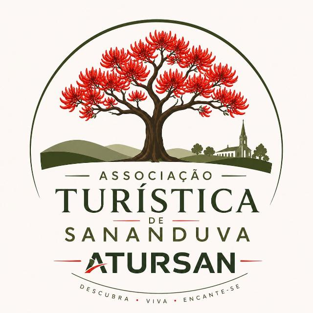
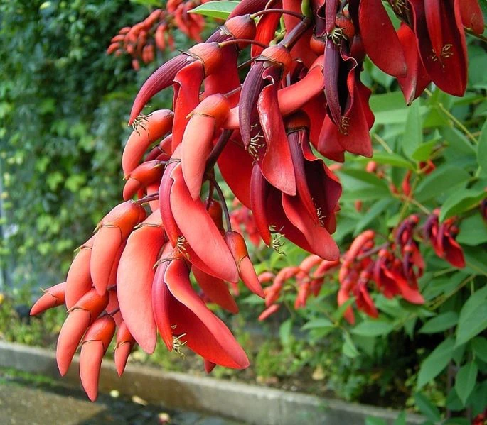
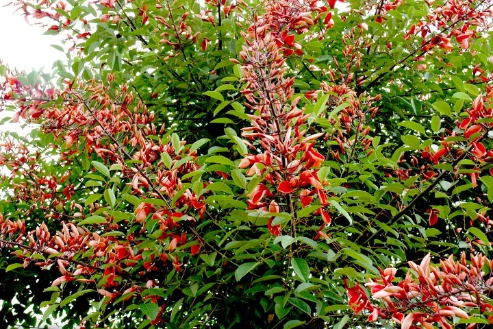

ATURSANMapa vivo
Sobrevoe a nossa micro Sananduva, da cidade ao interior, e toque nos marcadores para conhecer cada atrativo.
Arraste para passear · use + e − para aproximar · toque nos marcadores
Descubra
Lugares, sabores e experiências que fazem de Sananduva um destino para voltar sempre.
Nossa identidade
A sananduva é a árvore de flores vermelhas intensas que batiza o município e está no centro do nosso logo. Quando floresce, colore praças, estradas e o interior de vermelho — um convite para parar, olhar e fotografar.
Ela representa o que a ATURSAN quer mostrar ao visitante: raízes fortes, gente acolhedora e uma cidade que floresce junto com quem chega.


Quem somos
Organizamos os estabelecimentos e atrativos turísticos do município para que o visitante encontre tudo em um só lugar.
Roteiros que unem a cidade e o interior: gastronomia, natureza, fé, indústria e tradição gaúcha.
Movimentar o comércio local e trazer gente de outras cidades para conhecer — e se apaixonar por — Sananduva.
Restaurantes, cafés, pousadas, espaços de eventos, produtores e atrativos do interior: venha somar com a ATURSAN.
Canais de contato em breve.